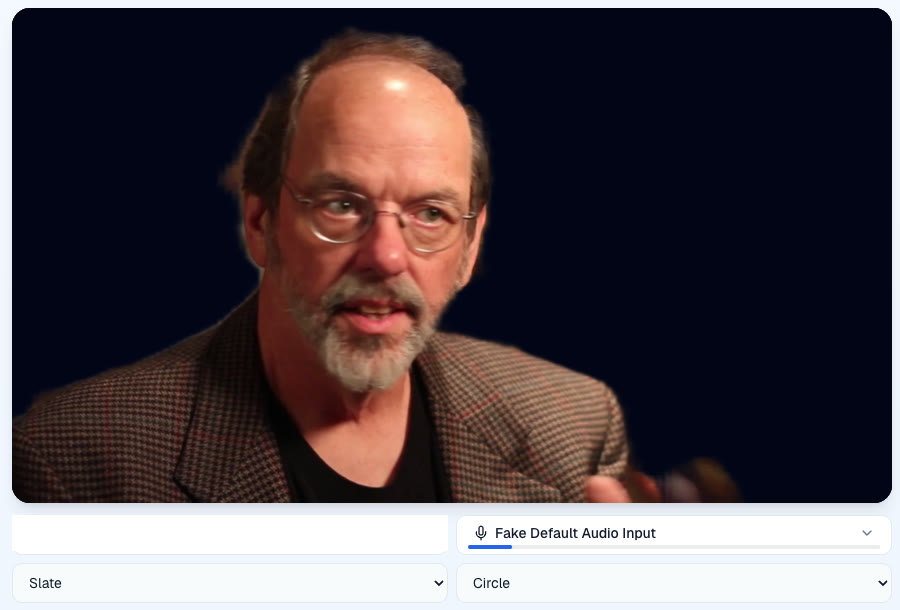
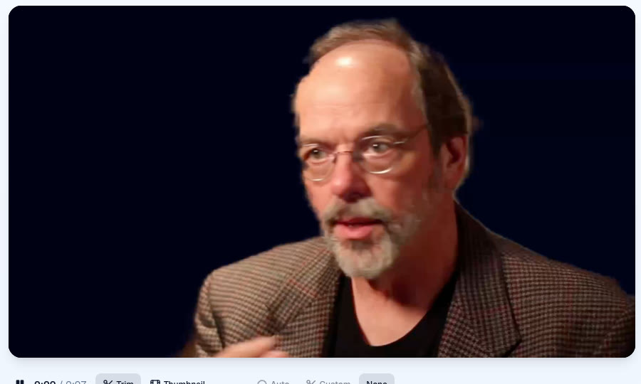
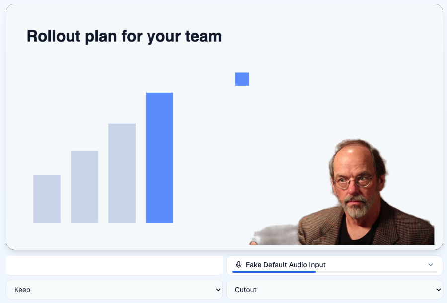
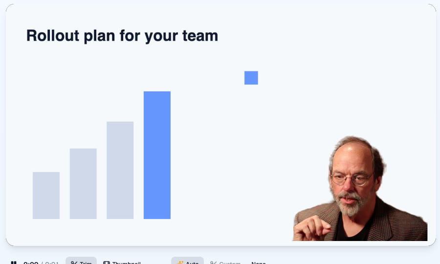
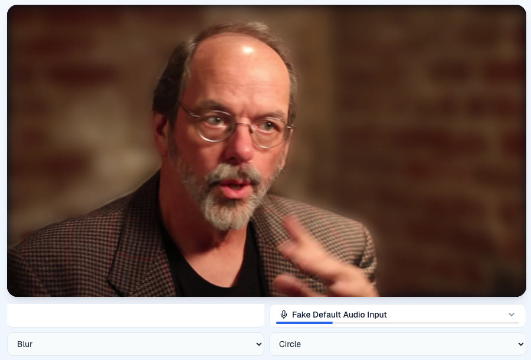
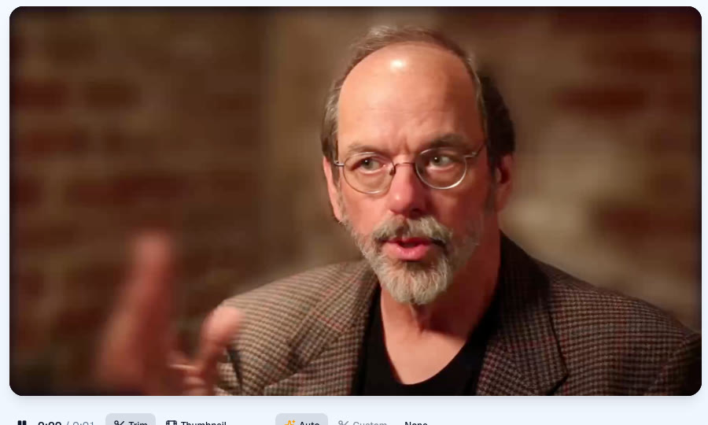

Recorded on https://pr-1608.clarity-video.workers.dev at 4cc708a95, 31 October 2026, headless Chromium on an Apple M4 with a talking-head clip as the fake camera and a faked screen share. Left: the live recorder monitor with the look chosen. Right: the finished take, which is the recorded file itself.




This clip's wall is already out of focus, so the blur shows most on the gesturing hand, which the live matte misses and blurs with the room.


Test footage: frames from Ward Cunningham, Inventor of the Wiki, Wikimedia Commons, CC BY-SA 3.0. These screenshots are shared under the same licence.